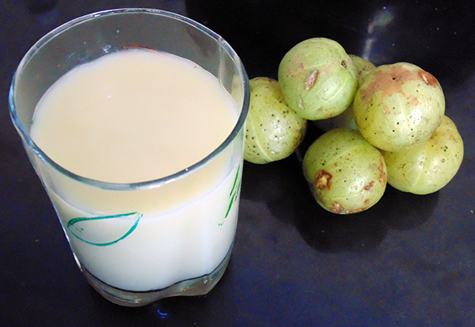

Amla Juice (Gooseberry Juice) |
| Rateing |
| prep time:5 minit |
| cook time:10 minit |
| total time:15 minit |
|  |
Ingredients: |
1 kg Amla (gooseberry)
Black salt to taste
|
Instructions: |
|
Grate or cut amla in to small pieces.
Grind it like smooth pulp in a mixture jar.
Sieve this pulp with cotton cloths.
Squeeze cotton with hand properly.
Store it for 10-15 day in a refrigerator.
As serve time, mix black salt in it.
Amla juice is ready for serve. |
video: |